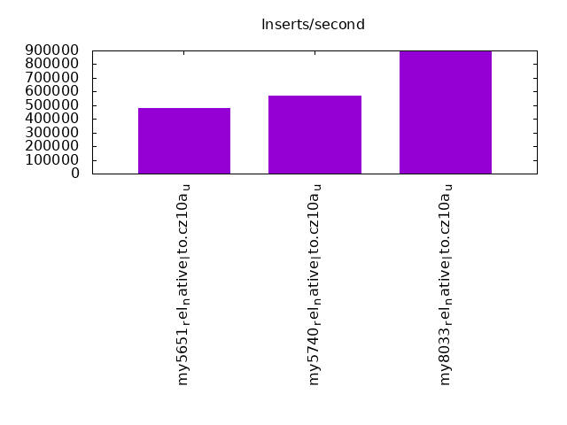
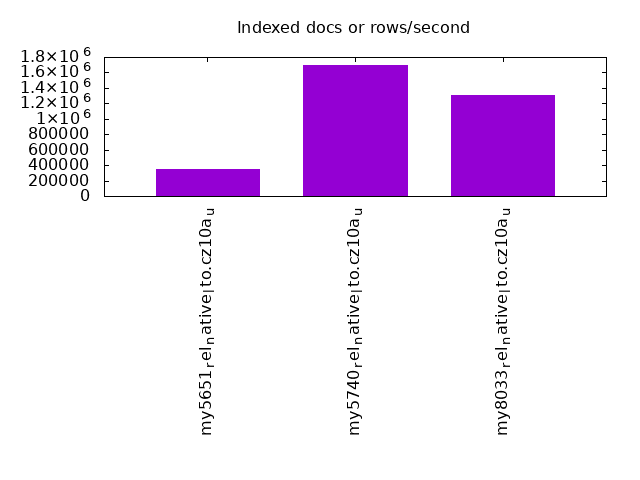
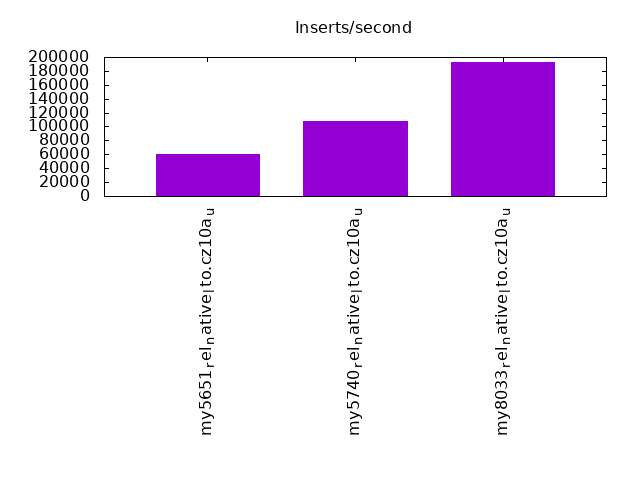
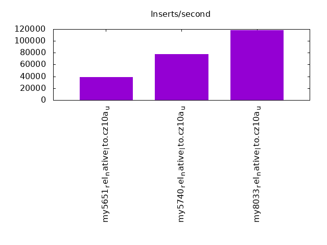
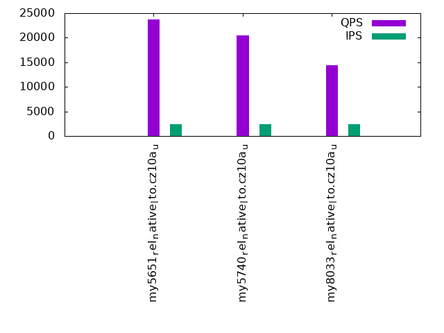
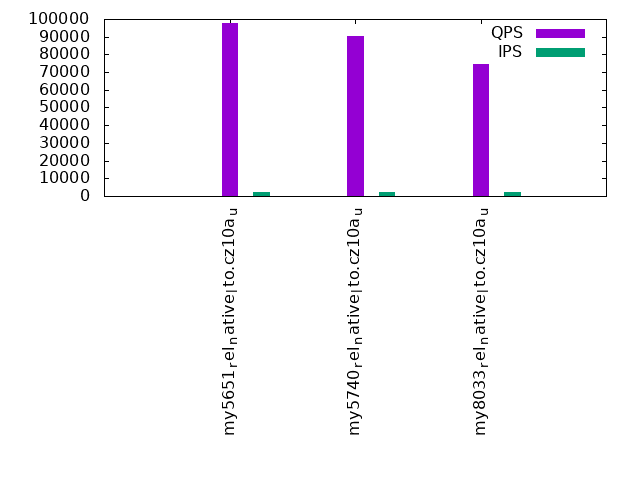
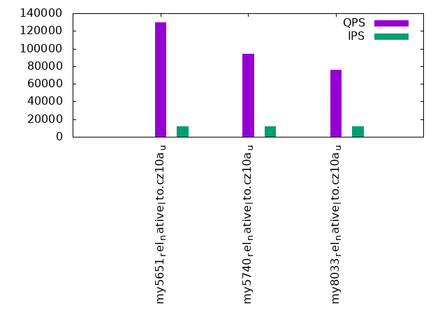
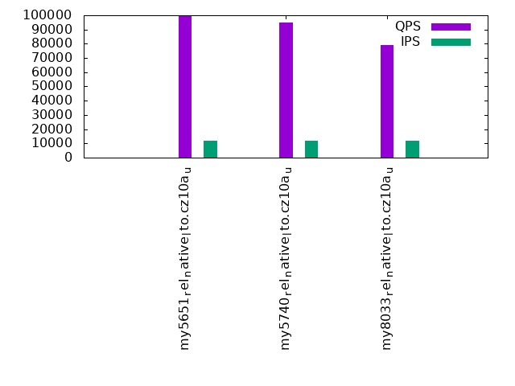
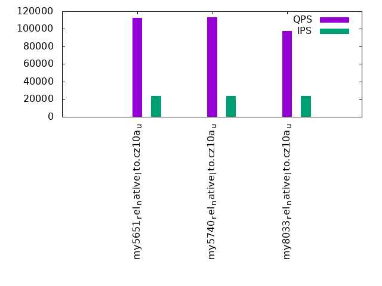
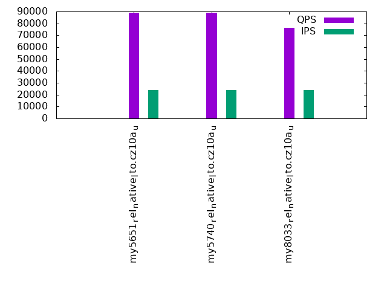

This is a report for the insert benchmark with 480M docs and 24 client(s). It is generated by scripts (bash, awk, sed) and Tufte might not be impressed. An overview of the insert benchmark is here and a short update is here. Below, by DBMS, I mean DBMS+version.config. An example is my8020.c10b40 where my means MySQL, 8020 is version 8.0.20 and c10b40 is the name for the configuration file.
The test server has 40 cores, 80 HW threads (hyperthreads enabled), 256G RAM and many TB of fast NVMe SSD with XFS and SW RAID 0. The benchmark was run with 24 clients and there were 1 or 3 connections per client (1 for queries or inserts without rate limits, 1+1 for rate limited inserts+deletes). It uses 1 table per client. It loads 20M rows per table without secondary indexes, creates 3 secondary indexes per table, then inserts 50m+50m rows per table with a delete per insert to avoid growing the table. It then does 6 read+write tests for 3600s each that do queries as fast as possible with 100,100,500,500,1000,1000 inserts/s and the same for deletes/s per client concurrent with the queries. The database is cached in memory. Clients and the DBMS share one server. The per-database configs are in the per-database subdirectories here.
The tested DBMS are:
The numbers are inserts/s for l.i0, l.i1 and l.i2, indexed docs (or rows) /s for l.x and queries/s for qr100, qp100 thru qr1000, qp1000" The values are the average rate over the entire test for inserts (IPS) and queries (QPS). The range of values for IPS and QPS is split into 3 parts: bottom 25%, middle 50%, top 25%. Values in the bottom 25% have a red background, values in the top 25% have a green background and values in the middle have no color. A gray background is used for values that can be ignored because the DBMS did not sustain the target insert rate. Red backgrounds are not used when the minimum value is within 80% of the max value.
| dbms | l.i0 | l.x | l.i1 | l.i2 | qr100 | qp100 | qr500 | qp500 | qr1000 | qp1000 |
|---|---|---|---|---|---|---|---|---|---|---|
| my5651_rel_native_lto.cz10a_u | 480000 | 355819 | 60162 | 38948 | 23777 | 97620 | 130060 | 99533 | 112487 | 88968 |
| my5740_rel_native_lto.cz10a_u | 570071 | 1696113 | 108011 | 77469 | 20429 | 90430 | 94372 | 94637 | 113173 | 88988 |
| my8033_rel_native_lto.cz10a_u | 890538 | 1311476 | 193353 | 118168 | 14418 | 74830 | 76125 | 79191 | 97957 | 76468 |
This table has relative throughput, throughput for the DBMS relative to the DBMS in the first line, using the absolute throughput from the previous table. Values less than 0.95 have a yellow background. Values greater than 1.05 have a blue background.
| dbms | l.i0 | l.x | l.i1 | l.i2 | qr100 | qp100 | qr500 | qp500 | qr1000 | qp1000 |
|---|---|---|---|---|---|---|---|---|---|---|
| my5651_rel_native_lto.cz10a_u | 1.00 | 1.00 | 1.00 | 1.00 | 1.00 | 1.00 | 1.00 | 1.00 | 1.00 | 1.00 |
| my5740_rel_native_lto.cz10a_u | 1.19 | 4.77 | 1.80 | 1.99 | 0.86 | 0.93 | 0.73 | 0.95 | 1.01 | 1.00 |
| my8033_rel_native_lto.cz10a_u | 1.86 | 3.69 | 3.21 | 3.03 | 0.61 | 0.77 | 0.59 | 0.80 | 0.87 | 0.86 |
This lists the average rate of inserts/s for the tests that do inserts concurrent with queries. For such tests the query rate is listed in the table above. The read+write tests are setup so that the insert rate should match the target rate every second. Cells that are not at least 95% of the target have a red background to indicate a failure to satisfy the target.
| dbms | qr100.L1 | qp100.L2 | qr500.L3 | qp500.L4 | qr1000.L5 | qp1000.L6 |
|---|---|---|---|---|---|---|
| my5651_rel_native_lto.cz10a_u | 2379 | 2380 | 11907 | 11911 | 23828 | 23828 |
| my5740_rel_native_lto.cz10a_u | 2378 | 2380 | 11904 | 11907 | 23828 | 23828 |
| my8033_rel_native_lto.cz10a_u | 2378 | 2380 | 11904 | 11907 | 23821 | 23828 |
| target | 2400 | 2400 | 12000 | 12000 | 24000 | 24000 |
l.i0: load without secondary indexes. Graphs for performance per 1-second interval are here.
Average throughput:
Insert response time histogram: each cell has the percentage of responses that take <= the time in the header and max is the max response time in seconds. For the max column values in the top 25% of the range have a red background and in the bottom 25% of the range have a green background. The red background is not used when the min value is within 80% of the max value.
| dbms | 256us | 1ms | 4ms | 16ms | 64ms | 256ms | 1s | 4s | 16s | gt | max |
|---|---|---|---|---|---|---|---|---|---|---|---|
| my5651_rel_native_lto.cz10a_u | 0.279 | 10.759 | 88.707 | 0.212 | 0.043 | 0.089 | |||||
| my5740_rel_native_lto.cz10a_u | 0.196 | 50.067 | 49.692 | 0.002 | 0.043 | 0.090 | |||||
| my8033_rel_native_lto.cz10a_u | 99.924 | 0.028 | 0.005 | 0.042 | 0.111 |
Performance metrics for the DBMS listed above. Some are normalized by throughput, others are not. Legend for results is here.
ips qps rps rmbps wps wmbps rpq rkbpq wpi wkbpi csps cpups cspq cpupq dbgb1 dbgb2 rss maxop p50 p99 tag 480000 0 0 0.0 2333.8 112.9 0.000 0.000 0.005 0.241 69168 38.5 0.144 64 31.8 160.3 46.2 0.089 20280 17882 my5651_rel_native_lto.cz10a_u 570071 0 0 0.0 2833.0 135.0 0.000 0.000 0.005 0.242 80694 40.7 0.142 57 31.8 160.3 47.3 0.090 24276 21878 my5740_rel_native_lto.cz10a_u 890538 0 0 0.0 4257.2 209.4 0.000 0.000 0.005 0.241 193913 50.3 0.218 45 31.7 160.3 47.3 0.111 39261 31668 my8033_rel_native_lto.cz10a_u
l.x: create secondary indexes.
Average throughput:
Performance metrics for the DBMS listed above. Some are normalized by throughput, others are not. Legend for results is here.
ips qps rps rmbps wps wmbps rpq rkbpq wpi wkbpi csps cpups cspq cpupq dbgb1 dbgb2 rss maxop p50 p99 tag 355819 0 0 0.0 19872.6 686.7 0.000 0.000 0.056 1.976 68052 30.7 0.191 69 66.9 195.4 81.7 0.001 NA NA my5651_rel_native_lto.cz10a_u 1696113 0 0 0.0 28483.2 1520.7 0.000 0.000 0.017 0.918 148293 30.4 0.087 14 72.8 201.4 83.2 0.002 NA NA my5740_rel_native_lto.cz10a_u 1311476 0 7257 344.8 28871.4 1068.7 0.006 0.269 0.022 0.834 217748 73.1 0.166 45 72.7 201.2 75.5 0.005 NA NA my8033_rel_native_lto.cz10a_u
l.i1: continue load after secondary indexes created with 50 inserts per transaction. Graphs for performance per 1-second interval are here.
Average throughput:
Insert response time histogram: each cell has the percentage of responses that take <= the time in the header and max is the max response time in seconds. For the max column values in the top 25% of the range have a red background and in the bottom 25% of the range have a green background. The red background is not used when the min value is within 80% of the max value.
| dbms | 256us | 1ms | 4ms | 16ms | 64ms | 256ms | 1s | 4s | 16s | gt | max |
|---|---|---|---|---|---|---|---|---|---|---|---|
| my5651_rel_native_lto.cz10a_u | 0.010 | 14.511 | 85.469 | 0.010 | nonzero | 5.733 | |||||
| my5740_rel_native_lto.cz10a_u | 0.022 | 99.742 | 0.198 | 0.037 | nonzero | 0.821 | |||||
| my8033_rel_native_lto.cz10a_u | 22.988 | 76.501 | 0.351 | 0.141 | 0.019 | 0.546 |
Delete response time histogram: each cell has the percentage of responses that take <= the time in the header and max is the max response time in seconds. For the max column values in the top 25% of the range have a red background and in the bottom 25% of the range have a green background. The red background is not used when the min value is within 80% of the max value.
| dbms | 256us | 1ms | 4ms | 16ms | 64ms | 256ms | 1s | 4s | 16s | gt | max |
|---|---|---|---|---|---|---|---|---|---|---|---|
| my5651_rel_native_lto.cz10a_u | 0.017 | 19.142 | 80.834 | 0.007 | nonzero | 5.731 | |||||
| my5740_rel_native_lto.cz10a_u | 0.048 | 99.762 | 0.154 | 0.036 | nonzero | 0.655 | |||||
| my8033_rel_native_lto.cz10a_u | 49.806 | 48.912 | 0.572 | 0.573 | 0.136 | 0.555 |
Performance metrics for the DBMS listed above. Some are normalized by throughput, others are not. Legend for results is here.
ips qps rps rmbps wps wmbps rpq rkbpq wpi wkbpi csps cpups cspq cpupq dbgb1 dbgb2 rss maxop p50 p99 tag 60162 0 1389 6.0 5847.2 185.1 0.023 0.102 0.097 3.151 133813 65.7 2.224 874 227.3 403.7 215.8 5.733 2497 1998 my5651_rel_native_lto.cz10a_u 108011 0 130 2.0 9574.4 306.5 0.001 0.019 0.089 2.906 121267 69.5 1.123 515 236.0 415.5 216.8 0.821 4496 4047 my5740_rel_native_lto.cz10a_u 193353 0 1213 19.0 16782.4 553.7 0.006 0.101 0.087 2.932 820467 59.2 4.243 245 246.4 438.6 216.2 0.546 8791 3247 my8033_rel_native_lto.cz10a_u
l.i2: continue load after secondary indexes created with 5 inserts per transaction. Graphs for performance per 1-second interval are here.
Average throughput:
Insert response time histogram: each cell has the percentage of responses that take <= the time in the header and max is the max response time in seconds. For the max column values in the top 25% of the range have a red background and in the bottom 25% of the range have a green background. The red background is not used when the min value is within 80% of the max value.
| dbms | 256us | 1ms | 4ms | 16ms | 64ms | 256ms | 1s | 4s | 16s | gt | max |
|---|---|---|---|---|---|---|---|---|---|---|---|
| my5651_rel_native_lto.cz10a_u | nonzero | 0.450 | 83.458 | 16.085 | 0.006 | nonzero | 0.134 | ||||
| my5740_rel_native_lto.cz10a_u | nonzero | 6.335 | 93.588 | 0.064 | 0.006 | 0.007 | 0.220 | ||||
| my8033_rel_native_lto.cz10a_u | 70.490 | 29.373 | 0.128 | 0.002 | 0.007 | 0.113 |
Delete response time histogram: each cell has the percentage of responses that take <= the time in the header and max is the max response time in seconds. For the max column values in the top 25% of the range have a red background and in the bottom 25% of the range have a green background. The red background is not used when the min value is within 80% of the max value.
| dbms | 256us | 1ms | 4ms | 16ms | 64ms | 256ms | 1s | 4s | 16s | gt | max |
|---|---|---|---|---|---|---|---|---|---|---|---|
| my5651_rel_native_lto.cz10a_u | nonzero | 0.546 | 84.373 | 15.073 | 0.008 | nonzero | 0.134 | ||||
| my5740_rel_native_lto.cz10a_u | nonzero | 5.919 | 94.002 | 0.064 | 0.007 | 0.007 | 0.220 | ||||
| my8033_rel_native_lto.cz10a_u | 76.513 | 23.331 | 0.146 | 0.002 | 0.007 | 0.124 |
Performance metrics for the DBMS listed above. Some are normalized by throughput, others are not. Legend for results is here.
ips qps rps rmbps wps wmbps rpq rkbpq wpi wkbpi csps cpups cspq cpupq dbgb1 dbgb2 rss maxop p50 p99 tag 38948 0 5580 30.8 6239.4 187.5 0.143 0.809 0.160 4.930 342258 54.2 8.787 1113 237.9 434.0 215.9 0.134 1623 1503 my5651_rel_native_lto.cz10a_u 77469 0 1520 23.7 10472.4 317.9 0.020 0.314 0.135 4.201 555318 57.5 7.168 594 248.7 448.6 216.9 0.220 3257 2962 my5740_rel_native_lto.cz10a_u 118168 0 2746 42.9 15041.3 469.4 0.023 0.372 0.127 4.068 1233675 63.2 10.440 428 259.3 488.6 216.2 0.113 4880 4351 my8033_rel_native_lto.cz10a_u
qr100.L1: range queries with 100 insert/s per client. Graphs for performance per 1-second interval are here.
Average throughput:
Query response time histogram: each cell has the percentage of responses that take <= the time in the header and max is the max response time in seconds. For max values in the top 25% of the range have a red background and in the bottom 25% of the range have a green background. The red background is not used when the min value is within 80% of the max value.
| dbms | 256us | 1ms | 4ms | 16ms | 64ms | 256ms | 1s | 4s | 16s | gt | max |
|---|---|---|---|---|---|---|---|---|---|---|---|
| my5651_rel_native_lto.cz10a_u | 66.050 | 0.514 | 31.694 | 1.690 | 0.051 | nonzero | 0.067 | ||||
| my5740_rel_native_lto.cz10a_u | 65.598 | 1.064 | 30.475 | 2.846 | 0.018 | nonzero | 0.087 | ||||
| my8033_rel_native_lto.cz10a_u | 57.623 | 9.030 | 12.911 | 20.411 | 0.025 | nonzero | 0.087 |
Insert response time histogram: each cell has the percentage of responses that take <= the time in the header and max is the max response time in seconds. For max values in the top 25% of the range have a red background and in the bottom 25% of the range have a green background. The red background is not used when the min value is within 80% of the max value.
| dbms | 256us | 1ms | 4ms | 16ms | 64ms | 256ms | 1s | 4s | 16s | gt | max |
|---|---|---|---|---|---|---|---|---|---|---|---|
| my5651_rel_native_lto.cz10a_u | 34.170 | 65.152 | 0.678 | 0.055 | |||||||
| my5740_rel_native_lto.cz10a_u | 42.341 | 57.659 | 0.016 | ||||||||
| my8033_rel_native_lto.cz10a_u | 65.993 | 34.006 | 0.001 | 0.024 |
Delete response time histogram: each cell has the percentage of responses that take <= the time in the header and max is the max response time in seconds. For max values in the top 25% of the range have a red background and in the bottom 25% of the range have a green background. The red background is not used when the min value is within 80% of the max value.
| dbms | 256us | 1ms | 4ms | 16ms | 64ms | 256ms | 1s | 4s | 16s | gt | max |
|---|---|---|---|---|---|---|---|---|---|---|---|
| my5651_rel_native_lto.cz10a_u | 67.961 | 31.752 | 0.287 | 0.032 | |||||||
| my5740_rel_native_lto.cz10a_u | 81.488 | 18.512 | 0.015 | ||||||||
| my8033_rel_native_lto.cz10a_u | 99.870 | 0.130 | 0.001 | 0.028 |
Performance metrics for the DBMS listed above. Some are normalized by throughput, others are not. Legend for results is here.
ips qps rps rmbps wps wmbps rpq rkbpq wpi wkbpi csps cpups cspq cpupq dbgb1 dbgb2 rss maxop p50 p99 tag 2379 23777 1624 24.4 6045.5 175.8 0.068 1.050 2.541 75.681 129668 37.6 5.454 1265 237.9 434.0 215.9 0.067 959 687 my5651_rel_native_lto.cz10a_u 2378 20429 1725 27.0 6477.6 186.9 0.084 1.351 2.725 80.484 115537 39.4 5.655 1543 248.7 448.6 216.9 0.087 863 623 my5740_rel_native_lto.cz10a_u 2378 14418 2202 34.4 7164.5 207.6 0.153 2.444 3.013 89.396 137771 38.4 9.555 2131 259.3 455.8 216.2 0.087 591 416 my8033_rel_native_lto.cz10a_u
qp100.L2: point queries with 100 insert/s per client. Graphs for performance per 1-second interval are here.
Average throughput:
Query response time histogram: each cell has the percentage of responses that take <= the time in the header and max is the max response time in seconds. For max values in the top 25% of the range have a red background and in the bottom 25% of the range have a green background. The red background is not used when the min value is within 80% of the max value.
| dbms | 256us | 1ms | 4ms | 16ms | 64ms | 256ms | 1s | 4s | 16s | gt | max |
|---|---|---|---|---|---|---|---|---|---|---|---|
| my5651_rel_native_lto.cz10a_u | 85.887 | 13.908 | 0.153 | 0.051 | 0.001 | 0.024 | |||||
| my5740_rel_native_lto.cz10a_u | 62.622 | 37.330 | 0.048 | nonzero | nonzero | 0.021 | |||||
| my8033_rel_native_lto.cz10a_u | 21.079 | 78.861 | 0.060 | 0.001 | nonzero | 0.025 |
Insert response time histogram: each cell has the percentage of responses that take <= the time in the header and max is the max response time in seconds. For max values in the top 25% of the range have a red background and in the bottom 25% of the range have a green background. The red background is not used when the min value is within 80% of the max value.
| dbms | 256us | 1ms | 4ms | 16ms | 64ms | 256ms | 1s | 4s | 16s | gt | max |
|---|---|---|---|---|---|---|---|---|---|---|---|
| my5651_rel_native_lto.cz10a_u | 60.241 | 39.610 | 0.149 | 0.027 | |||||||
| my5740_rel_native_lto.cz10a_u | 66.678 | 33.321 | 0.001 | 0.038 | |||||||
| my8033_rel_native_lto.cz10a_u | 73.248 | 26.752 | 0.001 | 0.018 |
Delete response time histogram: each cell has the percentage of responses that take <= the time in the header and max is the max response time in seconds. For max values in the top 25% of the range have a red background and in the bottom 25% of the range have a green background. The red background is not used when the min value is within 80% of the max value.
| dbms | 256us | 1ms | 4ms | 16ms | 64ms | 256ms | 1s | 4s | 16s | gt | max |
|---|---|---|---|---|---|---|---|---|---|---|---|
| my5651_rel_native_lto.cz10a_u | 81.377 | 18.523 | 0.100 | 0.026 | |||||||
| my5740_rel_native_lto.cz10a_u | 88.749 | 11.251 | 0.001 | 0.016 | |||||||
| my8033_rel_native_lto.cz10a_u | 99.895 | 0.104 | 0.001 | 0.019 |
Performance metrics for the DBMS listed above. Some are normalized by throughput, others are not. Legend for results is here.
ips qps rps rmbps wps wmbps rpq rkbpq wpi wkbpi csps cpups cspq cpupq dbgb1 dbgb2 rss maxop p50 p99 tag 2380 97620 1566 23.5 3786.7 109.8 0.016 0.246 1.591 47.246 426036 37.5 4.364 307 237.9 434.0 215.9 0.024 4075 3804 my5651_rel_native_lto.cz10a_u 2380 90430 1510 23.6 4115.0 118.9 0.017 0.267 1.729 51.163 395434 39.5 4.373 349 248.7 448.6 216.9 0.021 3806 3612 my5740_rel_native_lto.cz10a_u 2380 74830 1667 26.1 4687.0 136.1 0.022 0.357 1.970 58.587 429678 38.4 5.742 411 259.3 456.5 216.2 0.025 3133 2941 my8033_rel_native_lto.cz10a_u
qr500.L3: range queries with 500 insert/s per client. Graphs for performance per 1-second interval are here.
Average throughput:
Query response time histogram: each cell has the percentage of responses that take <= the time in the header and max is the max response time in seconds. For max values in the top 25% of the range have a red background and in the bottom 25% of the range have a green background. The red background is not used when the min value is within 80% of the max value.
| dbms | 256us | 1ms | 4ms | 16ms | 64ms | 256ms | 1s | 4s | 16s | gt | max |
|---|---|---|---|---|---|---|---|---|---|---|---|
| my5651_rel_native_lto.cz10a_u | 95.335 | 4.572 | 0.069 | 0.024 | nonzero | 0.042 | |||||
| my5740_rel_native_lto.cz10a_u | 82.547 | 16.773 | 0.676 | 0.004 | nonzero | 0.026 | |||||
| my8033_rel_native_lto.cz10a_u | 70.795 | 25.796 | 3.405 | 0.003 | nonzero | 0.023 |
Insert response time histogram: each cell has the percentage of responses that take <= the time in the header and max is the max response time in seconds. For max values in the top 25% of the range have a red background and in the bottom 25% of the range have a green background. The red background is not used when the min value is within 80% of the max value.
| dbms | 256us | 1ms | 4ms | 16ms | 64ms | 256ms | 1s | 4s | 16s | gt | max |
|---|---|---|---|---|---|---|---|---|---|---|---|
| my5651_rel_native_lto.cz10a_u | 2.101 | 39.850 | 58.046 | 0.003 | 0.088 | ||||||
| my5740_rel_native_lto.cz10a_u | 41.927 | 58.069 | 0.005 | 0.025 | |||||||
| my8033_rel_native_lto.cz10a_u | 91.798 | 8.202 | nonzero | 0.023 |
Delete response time histogram: each cell has the percentage of responses that take <= the time in the header and max is the max response time in seconds. For max values in the top 25% of the range have a red background and in the bottom 25% of the range have a green background. The red background is not used when the min value is within 80% of the max value.
| dbms | 256us | 1ms | 4ms | 16ms | 64ms | 256ms | 1s | 4s | 16s | gt | max |
|---|---|---|---|---|---|---|---|---|---|---|---|
| my5651_rel_native_lto.cz10a_u | 3.354 | 44.295 | 52.348 | 0.003 | 0.084 | ||||||
| my5740_rel_native_lto.cz10a_u | 55.288 | 44.708 | 0.004 | 0.023 | |||||||
| my8033_rel_native_lto.cz10a_u | 99.951 | 0.048 | 0.001 | 0.021 |
Performance metrics for the DBMS listed above. Some are normalized by throughput, others are not. Legend for results is here.
ips qps rps rmbps wps wmbps rpq rkbpq wpi wkbpi csps cpups cspq cpupq dbgb1 dbgb2 rss maxop p50 p99 tag 11907 130060 375 2.1 2259.0 65.8 0.003 0.017 0.190 5.662 526154 42.3 4.045 260 237.9 434.0 215.9 0.042 5419 4955 my5651_rel_native_lto.cz10a_u 11904 94372 450 7.0 3778.5 110.0 0.005 0.076 0.317 9.461 392717 39.4 4.161 334 248.7 448.6 216.9 0.026 3916 2237 my5740_rel_native_lto.cz10a_u 11904 76125 545 8.5 4097.2 120.8 0.007 0.115 0.344 10.390 386563 37.4 5.078 393 259.3 388.2 216.2 0.023 3149 1614 my8033_rel_native_lto.cz10a_u
qp500.L4: point queries with 500 insert/s per client. Graphs for performance per 1-second interval are here.
Average throughput:
Query response time histogram: each cell has the percentage of responses that take <= the time in the header and max is the max response time in seconds. For max values in the top 25% of the range have a red background and in the bottom 25% of the range have a green background. The red background is not used when the min value is within 80% of the max value.
| dbms | 256us | 1ms | 4ms | 16ms | 64ms | 256ms | 1s | 4s | 16s | gt | max |
|---|---|---|---|---|---|---|---|---|---|---|---|
| my5651_rel_native_lto.cz10a_u | 82.804 | 17.090 | 0.077 | 0.028 | nonzero | nonzero | 0.078 | ||||
| my5740_rel_native_lto.cz10a_u | 71.065 | 28.923 | 0.009 | 0.002 | nonzero | 0.027 | |||||
| my8033_rel_native_lto.cz10a_u | 34.524 | 65.465 | 0.011 | nonzero | nonzero | 0.018 |
Insert response time histogram: each cell has the percentage of responses that take <= the time in the header and max is the max response time in seconds. For max values in the top 25% of the range have a red background and in the bottom 25% of the range have a green background. The red background is not used when the min value is within 80% of the max value.
| dbms | 256us | 1ms | 4ms | 16ms | 64ms | 256ms | 1s | 4s | 16s | gt | max |
|---|---|---|---|---|---|---|---|---|---|---|---|
| my5651_rel_native_lto.cz10a_u | 2.234 | 49.030 | 48.733 | 0.003 | 0.108 | ||||||
| my5740_rel_native_lto.cz10a_u | 9.903 | 89.808 | 0.289 | 0.041 | |||||||
| my8033_rel_native_lto.cz10a_u | 39.626 | 60.368 | 0.006 | 0.023 |
Delete response time histogram: each cell has the percentage of responses that take <= the time in the header and max is the max response time in seconds. For max values in the top 25% of the range have a red background and in the bottom 25% of the range have a green background. The red background is not used when the min value is within 80% of the max value.
| dbms | 256us | 1ms | 4ms | 16ms | 64ms | 256ms | 1s | 4s | 16s | gt | max |
|---|---|---|---|---|---|---|---|---|---|---|---|
| my5651_rel_native_lto.cz10a_u | 3.508 | 54.798 | 41.692 | 0.003 | 0.113 | ||||||
| my5740_rel_native_lto.cz10a_u | 14.295 | 85.492 | 0.213 | 0.040 | |||||||
| my8033_rel_native_lto.cz10a_u | 93.311 | 6.686 | 0.002 | 0.023 |
Performance metrics for the DBMS listed above. Some are normalized by throughput, others are not. Legend for results is here.
ips qps rps rmbps wps wmbps rpq rkbpq wpi wkbpi csps cpups cspq cpupq dbgb1 dbgb2 rss maxop p50 p99 tag 11911 99533 314 1.3 1810.3 53.3 0.003 0.013 0.152 4.579 430691 41.1 4.327 330 237.9 434.0 215.9 0.078 4172 3964 my5651_rel_native_lto.cz10a_u 11907 94637 5 0.1 1592.7 47.2 0.000 0.001 0.134 4.061 404985 36.9 4.279 312 248.7 448.6 216.9 0.027 3964 3772 my5740_rel_native_lto.cz10a_u 11907 79191 7 0.1 1783.4 53.2 0.000 0.001 0.150 4.579 408499 34.8 5.158 352 259.3 388.2 216.2 0.018 3308 3133 my8033_rel_native_lto.cz10a_u
qr1000.L5: range queries with 1000 insert/s per client. Graphs for performance per 1-second interval are here.
Average throughput:
Query response time histogram: each cell has the percentage of responses that take <= the time in the header and max is the max response time in seconds. For max values in the top 25% of the range have a red background and in the bottom 25% of the range have a green background. The red background is not used when the min value is within 80% of the max value.
| dbms | 256us | 1ms | 4ms | 16ms | 64ms | 256ms | 1s | 4s | 16s | gt | max |
|---|---|---|---|---|---|---|---|---|---|---|---|
| my5651_rel_native_lto.cz10a_u | 87.377 | 12.271 | 0.309 | 0.041 | 0.002 | 0.032 | |||||
| my5740_rel_native_lto.cz10a_u | 88.155 | 11.770 | 0.056 | 0.018 | nonzero | 0.046 | |||||
| my8033_rel_native_lto.cz10a_u | 76.713 | 23.227 | 0.059 | 0.001 | nonzero | 0.020 |
Insert response time histogram: each cell has the percentage of responses that take <= the time in the header and max is the max response time in seconds. For max values in the top 25% of the range have a red background and in the bottom 25% of the range have a green background. The red background is not used when the min value is within 80% of the max value.
| dbms | 256us | 1ms | 4ms | 16ms | 64ms | 256ms | 1s | 4s | 16s | gt | max |
|---|---|---|---|---|---|---|---|---|---|---|---|
| my5651_rel_native_lto.cz10a_u | 0.406 | 14.269 | 85.325 | nonzero | 0.080 | ||||||
| my5740_rel_native_lto.cz10a_u | 1.892 | 94.396 | 3.712 | 0.049 | |||||||
| my8033_rel_native_lto.cz10a_u | 14.831 | 85.116 | 0.053 | 0.032 |
Delete response time histogram: each cell has the percentage of responses that take <= the time in the header and max is the max response time in seconds. For max values in the top 25% of the range have a red background and in the bottom 25% of the range have a green background. The red background is not used when the min value is within 80% of the max value.
| dbms | 256us | 1ms | 4ms | 16ms | 64ms | 256ms | 1s | 4s | 16s | gt | max |
|---|---|---|---|---|---|---|---|---|---|---|---|
| my5651_rel_native_lto.cz10a_u | 0.262 | 15.495 | 84.243 | nonzero | 0.066 | ||||||
| my5740_rel_native_lto.cz10a_u | 1.491 | 95.832 | 2.677 | 0.051 | |||||||
| my8033_rel_native_lto.cz10a_u | 51.852 | 48.117 | 0.031 | 0.033 |
Performance metrics for the DBMS listed above. Some are normalized by throughput, others are not. Legend for results is here.
ips qps rps rmbps wps wmbps rpq rkbpq wpi wkbpi csps cpups cspq cpupq dbgb1 dbgb2 rss maxop p50 p99 tag 23828 112487 649 3.5 2820.5 84.7 0.006 0.032 0.118 3.639 465263 54.7 4.136 389 237.9 434.0 215.9 0.032 4699 4348 my5651_rel_native_lto.cz10a_u 23828 113173 93 1.4 2872.0 86.0 0.001 0.013 0.121 3.694 451036 46.3 3.985 327 248.7 448.6 216.9 0.046 4731 4316 my5740_rel_native_lto.cz10a_u 23821 97957 97 1.5 3333.4 100.4 0.001 0.016 0.140 4.315 517074 39.3 5.279 321 259.3 388.2 216.2 0.020 4091 3756 my8033_rel_native_lto.cz10a_u
qp1000.L6: point queries with 1000 insert/s per client. Graphs for performance per 1-second interval are here.
Average throughput:
Query response time histogram: each cell has the percentage of responses that take <= the time in the header and max is the max response time in seconds. For max values in the top 25% of the range have a red background and in the bottom 25% of the range have a green background. The red background is not used when the min value is within 80% of the max value.
| dbms | 256us | 1ms | 4ms | 16ms | 64ms | 256ms | 1s | 4s | 16s | gt | max |
|---|---|---|---|---|---|---|---|---|---|---|---|
| my5651_rel_native_lto.cz10a_u | 67.905 | 31.747 | 0.304 | 0.041 | 0.002 | 0.039 | |||||
| my5740_rel_native_lto.cz10a_u | 62.336 | 37.584 | 0.061 | 0.019 | nonzero | 0.026 | |||||
| my8033_rel_native_lto.cz10a_u | 31.272 | 68.652 | 0.075 | 0.002 | nonzero | 0.022 |
Insert response time histogram: each cell has the percentage of responses that take <= the time in the header and max is the max response time in seconds. For max values in the top 25% of the range have a red background and in the bottom 25% of the range have a green background. The red background is not used when the min value is within 80% of the max value.
| dbms | 256us | 1ms | 4ms | 16ms | 64ms | 256ms | 1s | 4s | 16s | gt | max |
|---|---|---|---|---|---|---|---|---|---|---|---|
| my5651_rel_native_lto.cz10a_u | 0.549 | 23.969 | 75.480 | 0.002 | 0.105 | ||||||
| my5740_rel_native_lto.cz10a_u | 2.719 | 94.300 | 2.980 | 0.001 | 0.081 | ||||||
| my8033_rel_native_lto.cz10a_u | 14.859 | 85.089 | 0.052 | 0.034 |
Delete response time histogram: each cell has the percentage of responses that take <= the time in the header and max is the max response time in seconds. For max values in the top 25% of the range have a red background and in the bottom 25% of the range have a green background. The red background is not used when the min value is within 80% of the max value.
| dbms | 256us | 1ms | 4ms | 16ms | 64ms | 256ms | 1s | 4s | 16s | gt | max |
|---|---|---|---|---|---|---|---|---|---|---|---|
| my5651_rel_native_lto.cz10a_u | 0.380 | 28.677 | 70.941 | 0.002 | 0.107 | ||||||
| my5740_rel_native_lto.cz10a_u | 2.390 | 95.498 | 2.111 | 0.001 | 0.078 | ||||||
| my8033_rel_native_lto.cz10a_u | 55.892 | 44.078 | 0.030 | 0.035 |
Performance metrics for the DBMS listed above. Some are normalized by throughput, others are not. Legend for results is here.
ips qps rps rmbps wps wmbps rpq rkbpq wpi wkbpi csps cpups cspq cpupq dbgb1 dbgb2 rss maxop p50 p99 tag 23828 88968 551 2.5 2891.5 86.6 0.006 0.029 0.121 3.721 402140 52.0 4.520 468 237.9 434.0 215.9 0.039 3724 3516 my5651_rel_native_lto.cz10a_u 23828 88988 35 0.5 2890.4 86.5 0.000 0.006 0.121 3.719 380535 45.3 4.276 407 248.7 448.6 216.9 0.026 3724 3516 my5740_rel_native_lto.cz10a_u 23828 76468 40 0.6 3355.4 100.9 0.001 0.008 0.141 4.335 459986 39.1 6.015 409 259.3 388.2 216.2 0.022 3213 3053 my8033_rel_native_lto.cz10a_u
l.i0: load without secondary indexes
Performance metrics for all DBMS, not just the ones listed above. Some are normalized by throughput, others are not. Legend for results is here.
ips qps rps rmbps wps wmbps rpq rkbpq wpi wkbpi csps cpups cspq cpupq dbgb1 dbgb2 rss maxop p50 p99 tag 480000 0 0 0.0 2333.8 112.9 0.000 0.000 0.005 0.241 69168 38.5 0.144 64 31.8 160.3 46.2 0.089 20280 17882 my5651_rel_native_lto.cz10a_u 570071 0 0 0.0 2833.0 135.0 0.000 0.000 0.005 0.242 80694 40.7 0.142 57 31.8 160.3 47.3 0.090 24276 21878 my5740_rel_native_lto.cz10a_u 890538 0 0 0.0 4257.2 209.4 0.000 0.000 0.005 0.241 193913 50.3 0.218 45 31.7 160.3 47.3 0.111 39261 31668 my8033_rel_native_lto.cz10a_u
l.x: create secondary indexes
Performance metrics for all DBMS, not just the ones listed above. Some are normalized by throughput, others are not. Legend for results is here.
ips qps rps rmbps wps wmbps rpq rkbpq wpi wkbpi csps cpups cspq cpupq dbgb1 dbgb2 rss maxop p50 p99 tag 355819 0 0 0.0 19872.6 686.7 0.000 0.000 0.056 1.976 68052 30.7 0.191 69 66.9 195.4 81.7 0.001 NA NA my5651_rel_native_lto.cz10a_u 1696113 0 0 0.0 28483.2 1520.7 0.000 0.000 0.017 0.918 148293 30.4 0.087 14 72.8 201.4 83.2 0.002 NA NA my5740_rel_native_lto.cz10a_u 1311476 0 7257 344.8 28871.4 1068.7 0.006 0.269 0.022 0.834 217748 73.1 0.166 45 72.7 201.2 75.5 0.005 NA NA my8033_rel_native_lto.cz10a_u
l.i1: continue load after secondary indexes created with 50 inserts per transaction
Performance metrics for all DBMS, not just the ones listed above. Some are normalized by throughput, others are not. Legend for results is here.
ips qps rps rmbps wps wmbps rpq rkbpq wpi wkbpi csps cpups cspq cpupq dbgb1 dbgb2 rss maxop p50 p99 tag 60162 0 1389 6.0 5847.2 185.1 0.023 0.102 0.097 3.151 133813 65.7 2.224 874 227.3 403.7 215.8 5.733 2497 1998 my5651_rel_native_lto.cz10a_u 108011 0 130 2.0 9574.4 306.5 0.001 0.019 0.089 2.906 121267 69.5 1.123 515 236.0 415.5 216.8 0.821 4496 4047 my5740_rel_native_lto.cz10a_u 193353 0 1213 19.0 16782.4 553.7 0.006 0.101 0.087 2.932 820467 59.2 4.243 245 246.4 438.6 216.2 0.546 8791 3247 my8033_rel_native_lto.cz10a_u
l.i2: continue load after secondary indexes created with 5 inserts per transaction
Performance metrics for all DBMS, not just the ones listed above. Some are normalized by throughput, others are not. Legend for results is here.
ips qps rps rmbps wps wmbps rpq rkbpq wpi wkbpi csps cpups cspq cpupq dbgb1 dbgb2 rss maxop p50 p99 tag 38948 0 5580 30.8 6239.4 187.5 0.143 0.809 0.160 4.930 342258 54.2 8.787 1113 237.9 434.0 215.9 0.134 1623 1503 my5651_rel_native_lto.cz10a_u 77469 0 1520 23.7 10472.4 317.9 0.020 0.314 0.135 4.201 555318 57.5 7.168 594 248.7 448.6 216.9 0.220 3257 2962 my5740_rel_native_lto.cz10a_u 118168 0 2746 42.9 15041.3 469.4 0.023 0.372 0.127 4.068 1233675 63.2 10.440 428 259.3 488.6 216.2 0.113 4880 4351 my8033_rel_native_lto.cz10a_u
qr100.L1: range queries with 100 insert/s per client
Performance metrics for all DBMS, not just the ones listed above. Some are normalized by throughput, others are not. Legend for results is here.
ips qps rps rmbps wps wmbps rpq rkbpq wpi wkbpi csps cpups cspq cpupq dbgb1 dbgb2 rss maxop p50 p99 tag 2379 23777 1624 24.4 6045.5 175.8 0.068 1.050 2.541 75.681 129668 37.6 5.454 1265 237.9 434.0 215.9 0.067 959 687 my5651_rel_native_lto.cz10a_u 2378 20429 1725 27.0 6477.6 186.9 0.084 1.351 2.725 80.484 115537 39.4 5.655 1543 248.7 448.6 216.9 0.087 863 623 my5740_rel_native_lto.cz10a_u 2378 14418 2202 34.4 7164.5 207.6 0.153 2.444 3.013 89.396 137771 38.4 9.555 2131 259.3 455.8 216.2 0.087 591 416 my8033_rel_native_lto.cz10a_u
qp100.L2: point queries with 100 insert/s per client
Performance metrics for all DBMS, not just the ones listed above. Some are normalized by throughput, others are not. Legend for results is here.
ips qps rps rmbps wps wmbps rpq rkbpq wpi wkbpi csps cpups cspq cpupq dbgb1 dbgb2 rss maxop p50 p99 tag 2380 97620 1566 23.5 3786.7 109.8 0.016 0.246 1.591 47.246 426036 37.5 4.364 307 237.9 434.0 215.9 0.024 4075 3804 my5651_rel_native_lto.cz10a_u 2380 90430 1510 23.6 4115.0 118.9 0.017 0.267 1.729 51.163 395434 39.5 4.373 349 248.7 448.6 216.9 0.021 3806 3612 my5740_rel_native_lto.cz10a_u 2380 74830 1667 26.1 4687.0 136.1 0.022 0.357 1.970 58.587 429678 38.4 5.742 411 259.3 456.5 216.2 0.025 3133 2941 my8033_rel_native_lto.cz10a_u
qr500.L3: range queries with 500 insert/s per client
Performance metrics for all DBMS, not just the ones listed above. Some are normalized by throughput, others are not. Legend for results is here.
ips qps rps rmbps wps wmbps rpq rkbpq wpi wkbpi csps cpups cspq cpupq dbgb1 dbgb2 rss maxop p50 p99 tag 11907 130060 375 2.1 2259.0 65.8 0.003 0.017 0.190 5.662 526154 42.3 4.045 260 237.9 434.0 215.9 0.042 5419 4955 my5651_rel_native_lto.cz10a_u 11904 94372 450 7.0 3778.5 110.0 0.005 0.076 0.317 9.461 392717 39.4 4.161 334 248.7 448.6 216.9 0.026 3916 2237 my5740_rel_native_lto.cz10a_u 11904 76125 545 8.5 4097.2 120.8 0.007 0.115 0.344 10.390 386563 37.4 5.078 393 259.3 388.2 216.2 0.023 3149 1614 my8033_rel_native_lto.cz10a_u
qp500.L4: point queries with 500 insert/s per client
Performance metrics for all DBMS, not just the ones listed above. Some are normalized by throughput, others are not. Legend for results is here.
ips qps rps rmbps wps wmbps rpq rkbpq wpi wkbpi csps cpups cspq cpupq dbgb1 dbgb2 rss maxop p50 p99 tag 11911 99533 314 1.3 1810.3 53.3 0.003 0.013 0.152 4.579 430691 41.1 4.327 330 237.9 434.0 215.9 0.078 4172 3964 my5651_rel_native_lto.cz10a_u 11907 94637 5 0.1 1592.7 47.2 0.000 0.001 0.134 4.061 404985 36.9 4.279 312 248.7 448.6 216.9 0.027 3964 3772 my5740_rel_native_lto.cz10a_u 11907 79191 7 0.1 1783.4 53.2 0.000 0.001 0.150 4.579 408499 34.8 5.158 352 259.3 388.2 216.2 0.018 3308 3133 my8033_rel_native_lto.cz10a_u
qr1000.L5: range queries with 1000 insert/s per client
Performance metrics for all DBMS, not just the ones listed above. Some are normalized by throughput, others are not. Legend for results is here.
ips qps rps rmbps wps wmbps rpq rkbpq wpi wkbpi csps cpups cspq cpupq dbgb1 dbgb2 rss maxop p50 p99 tag 23828 112487 649 3.5 2820.5 84.7 0.006 0.032 0.118 3.639 465263 54.7 4.136 389 237.9 434.0 215.9 0.032 4699 4348 my5651_rel_native_lto.cz10a_u 23828 113173 93 1.4 2872.0 86.0 0.001 0.013 0.121 3.694 451036 46.3 3.985 327 248.7 448.6 216.9 0.046 4731 4316 my5740_rel_native_lto.cz10a_u 23821 97957 97 1.5 3333.4 100.4 0.001 0.016 0.140 4.315 517074 39.3 5.279 321 259.3 388.2 216.2 0.020 4091 3756 my8033_rel_native_lto.cz10a_u
qp1000.L6: point queries with 1000 insert/s per client
Performance metrics for all DBMS, not just the ones listed above. Some are normalized by throughput, others are not. Legend for results is here.
ips qps rps rmbps wps wmbps rpq rkbpq wpi wkbpi csps cpups cspq cpupq dbgb1 dbgb2 rss maxop p50 p99 tag 23828 88968 551 2.5 2891.5 86.6 0.006 0.029 0.121 3.721 402140 52.0 4.520 468 237.9 434.0 215.9 0.039 3724 3516 my5651_rel_native_lto.cz10a_u 23828 88988 35 0.5 2890.4 86.5 0.000 0.006 0.121 3.719 380535 45.3 4.276 407 248.7 448.6 216.9 0.026 3724 3516 my5740_rel_native_lto.cz10a_u 23828 76468 40 0.6 3355.4 100.9 0.001 0.008 0.141 4.335 459986 39.1 6.015 409 259.3 388.2 216.2 0.022 3213 3053 my8033_rel_native_lto.cz10a_u
Insert response time histogram
256us 1ms 4ms 16ms 64ms 256ms 1s 4s 16s gt max tag 0.000 0.279 10.759 88.707 0.212 0.043 0.000 0.000 0.000 0.000 0.089 my5651_rel_native_lto.cz10a_u 0.000 0.196 50.067 49.692 0.002 0.043 0.000 0.000 0.000 0.000 0.090 my5740_rel_native_lto.cz10a_u 0.000 0.000 99.924 0.028 0.005 0.042 0.000 0.000 0.000 0.000 0.111 my8033_rel_native_lto.cz10a_u
TODO - determine whether there is data for create index response time
Insert response time histogram
256us 1ms 4ms 16ms 64ms 256ms 1s 4s 16s gt max tag 0.000 0.000 0.010 14.511 85.469 0.010 0.000 0.000 nonzero 0.000 5.733 my5651_rel_native_lto.cz10a_u 0.000 0.000 0.022 99.742 0.198 0.037 nonzero 0.000 0.000 0.000 0.821 my5740_rel_native_lto.cz10a_u 0.000 0.000 22.988 76.501 0.351 0.141 0.019 0.000 0.000 0.000 0.546 my8033_rel_native_lto.cz10a_u
Delete response time histogram
256us 1ms 4ms 16ms 64ms 256ms 1s 4s 16s gt max tag 0.000 0.000 0.017 19.142 80.834 0.007 0.000 0.000 nonzero 0.000 5.731 my5651_rel_native_lto.cz10a_u 0.000 0.000 0.048 99.762 0.154 0.036 nonzero 0.000 0.000 0.000 0.655 my5740_rel_native_lto.cz10a_u 0.000 0.000 49.806 48.912 0.572 0.573 0.136 0.000 0.000 0.000 0.555 my8033_rel_native_lto.cz10a_u
Insert response time histogram
256us 1ms 4ms 16ms 64ms 256ms 1s 4s 16s gt max tag nonzero 0.450 83.458 16.085 0.006 nonzero 0.000 0.000 0.000 0.000 0.134 my5651_rel_native_lto.cz10a_u nonzero 6.335 93.588 0.064 0.006 0.007 0.000 0.000 0.000 0.000 0.220 my5740_rel_native_lto.cz10a_u 0.000 70.490 29.373 0.128 0.002 0.007 0.000 0.000 0.000 0.000 0.113 my8033_rel_native_lto.cz10a_u
Delete response time histogram
256us 1ms 4ms 16ms 64ms 256ms 1s 4s 16s gt max tag nonzero 0.546 84.373 15.073 0.008 nonzero 0.000 0.000 0.000 0.000 0.134 my5651_rel_native_lto.cz10a_u nonzero 5.919 94.002 0.064 0.007 0.007 0.000 0.000 0.000 0.000 0.220 my5740_rel_native_lto.cz10a_u 0.000 76.513 23.331 0.146 0.002 0.007 0.000 0.000 0.000 0.000 0.124 my8033_rel_native_lto.cz10a_u
Query response time histogram
256us 1ms 4ms 16ms 64ms 256ms 1s 4s 16s gt max tag 66.050 0.514 31.694 1.690 0.051 nonzero 0.000 0.000 0.000 0.000 0.067 my5651_rel_native_lto.cz10a_u 65.598 1.064 30.475 2.846 0.018 nonzero 0.000 0.000 0.000 0.000 0.087 my5740_rel_native_lto.cz10a_u 57.623 9.030 12.911 20.411 0.025 nonzero 0.000 0.000 0.000 0.000 0.087 my8033_rel_native_lto.cz10a_u
Insert response time histogram
256us 1ms 4ms 16ms 64ms 256ms 1s 4s 16s gt max tag 0.000 0.000 34.170 65.152 0.678 0.000 0.000 0.000 0.000 0.000 0.055 my5651_rel_native_lto.cz10a_u 0.000 0.000 42.341 57.659 0.000 0.000 0.000 0.000 0.000 0.000 0.016 my5740_rel_native_lto.cz10a_u 0.000 0.000 65.993 34.006 0.001 0.000 0.000 0.000 0.000 0.000 0.024 my8033_rel_native_lto.cz10a_u
Delete response time histogram
256us 1ms 4ms 16ms 64ms 256ms 1s 4s 16s gt max tag 0.000 0.000 67.961 31.752 0.287 0.000 0.000 0.000 0.000 0.000 0.032 my5651_rel_native_lto.cz10a_u 0.000 0.000 81.488 18.512 0.000 0.000 0.000 0.000 0.000 0.000 0.015 my5740_rel_native_lto.cz10a_u 0.000 0.000 99.870 0.130 0.001 0.000 0.000 0.000 0.000 0.000 0.028 my8033_rel_native_lto.cz10a_u
Query response time histogram
256us 1ms 4ms 16ms 64ms 256ms 1s 4s 16s gt max tag 85.887 13.908 0.153 0.051 0.001 0.000 0.000 0.000 0.000 0.000 0.024 my5651_rel_native_lto.cz10a_u 62.622 37.330 0.048 nonzero nonzero 0.000 0.000 0.000 0.000 0.000 0.021 my5740_rel_native_lto.cz10a_u 21.079 78.861 0.060 0.001 nonzero 0.000 0.000 0.000 0.000 0.000 0.025 my8033_rel_native_lto.cz10a_u
Insert response time histogram
256us 1ms 4ms 16ms 64ms 256ms 1s 4s 16s gt max tag 0.000 0.000 60.241 39.610 0.149 0.000 0.000 0.000 0.000 0.000 0.027 my5651_rel_native_lto.cz10a_u 0.000 0.000 66.678 33.321 0.001 0.000 0.000 0.000 0.000 0.000 0.038 my5740_rel_native_lto.cz10a_u 0.000 0.000 73.248 26.752 0.001 0.000 0.000 0.000 0.000 0.000 0.018 my8033_rel_native_lto.cz10a_u
Delete response time histogram
256us 1ms 4ms 16ms 64ms 256ms 1s 4s 16s gt max tag 0.000 0.000 81.377 18.523 0.100 0.000 0.000 0.000 0.000 0.000 0.026 my5651_rel_native_lto.cz10a_u 0.000 0.000 88.749 11.251 0.001 0.000 0.000 0.000 0.000 0.000 0.016 my5740_rel_native_lto.cz10a_u 0.000 0.000 99.895 0.104 0.001 0.000 0.000 0.000 0.000 0.000 0.019 my8033_rel_native_lto.cz10a_u
Query response time histogram
256us 1ms 4ms 16ms 64ms 256ms 1s 4s 16s gt max tag 95.335 4.572 0.069 0.024 nonzero 0.000 0.000 0.000 0.000 0.000 0.042 my5651_rel_native_lto.cz10a_u 82.547 16.773 0.676 0.004 nonzero 0.000 0.000 0.000 0.000 0.000 0.026 my5740_rel_native_lto.cz10a_u 70.795 25.796 3.405 0.003 nonzero 0.000 0.000 0.000 0.000 0.000 0.023 my8033_rel_native_lto.cz10a_u
Insert response time histogram
256us 1ms 4ms 16ms 64ms 256ms 1s 4s 16s gt max tag 0.000 0.000 2.101 39.850 58.046 0.003 0.000 0.000 0.000 0.000 0.088 my5651_rel_native_lto.cz10a_u 0.000 0.000 41.927 58.069 0.005 0.000 0.000 0.000 0.000 0.000 0.025 my5740_rel_native_lto.cz10a_u 0.000 0.000 91.798 8.202 nonzero 0.000 0.000 0.000 0.000 0.000 0.023 my8033_rel_native_lto.cz10a_u
Delete response time histogram
256us 1ms 4ms 16ms 64ms 256ms 1s 4s 16s gt max tag 0.000 0.000 3.354 44.295 52.348 0.003 0.000 0.000 0.000 0.000 0.084 my5651_rel_native_lto.cz10a_u 0.000 0.000 55.288 44.708 0.004 0.000 0.000 0.000 0.000 0.000 0.023 my5740_rel_native_lto.cz10a_u 0.000 0.000 99.951 0.048 0.001 0.000 0.000 0.000 0.000 0.000 0.021 my8033_rel_native_lto.cz10a_u
Query response time histogram
256us 1ms 4ms 16ms 64ms 256ms 1s 4s 16s gt max tag 82.804 17.090 0.077 0.028 nonzero nonzero 0.000 0.000 0.000 0.000 0.078 my5651_rel_native_lto.cz10a_u 71.065 28.923 0.009 0.002 nonzero 0.000 0.000 0.000 0.000 0.000 0.027 my5740_rel_native_lto.cz10a_u 34.524 65.465 0.011 nonzero nonzero 0.000 0.000 0.000 0.000 0.000 0.018 my8033_rel_native_lto.cz10a_u
Insert response time histogram
256us 1ms 4ms 16ms 64ms 256ms 1s 4s 16s gt max tag 0.000 0.000 2.234 49.030 48.733 0.003 0.000 0.000 0.000 0.000 0.108 my5651_rel_native_lto.cz10a_u 0.000 0.000 9.903 89.808 0.289 0.000 0.000 0.000 0.000 0.000 0.041 my5740_rel_native_lto.cz10a_u 0.000 0.000 39.626 60.368 0.006 0.000 0.000 0.000 0.000 0.000 0.023 my8033_rel_native_lto.cz10a_u
Delete response time histogram
256us 1ms 4ms 16ms 64ms 256ms 1s 4s 16s gt max tag 0.000 0.000 3.508 54.798 41.692 0.003 0.000 0.000 0.000 0.000 0.113 my5651_rel_native_lto.cz10a_u 0.000 0.000 14.295 85.492 0.213 0.000 0.000 0.000 0.000 0.000 0.040 my5740_rel_native_lto.cz10a_u 0.000 0.000 93.311 6.686 0.002 0.000 0.000 0.000 0.000 0.000 0.023 my8033_rel_native_lto.cz10a_u
Query response time histogram
256us 1ms 4ms 16ms 64ms 256ms 1s 4s 16s gt max tag 87.377 12.271 0.309 0.041 0.002 0.000 0.000 0.000 0.000 0.000 0.032 my5651_rel_native_lto.cz10a_u 88.155 11.770 0.056 0.018 nonzero 0.000 0.000 0.000 0.000 0.000 0.046 my5740_rel_native_lto.cz10a_u 76.713 23.227 0.059 0.001 nonzero 0.000 0.000 0.000 0.000 0.000 0.020 my8033_rel_native_lto.cz10a_u
Insert response time histogram
256us 1ms 4ms 16ms 64ms 256ms 1s 4s 16s gt max tag 0.000 0.000 0.406 14.269 85.325 nonzero 0.000 0.000 0.000 0.000 0.080 my5651_rel_native_lto.cz10a_u 0.000 0.000 1.892 94.396 3.712 0.000 0.000 0.000 0.000 0.000 0.049 my5740_rel_native_lto.cz10a_u 0.000 0.000 14.831 85.116 0.053 0.000 0.000 0.000 0.000 0.000 0.032 my8033_rel_native_lto.cz10a_u
Delete response time histogram
256us 1ms 4ms 16ms 64ms 256ms 1s 4s 16s gt max tag 0.000 0.000 0.262 15.495 84.243 nonzero 0.000 0.000 0.000 0.000 0.066 my5651_rel_native_lto.cz10a_u 0.000 0.000 1.491 95.832 2.677 0.000 0.000 0.000 0.000 0.000 0.051 my5740_rel_native_lto.cz10a_u 0.000 0.000 51.852 48.117 0.031 0.000 0.000 0.000 0.000 0.000 0.033 my8033_rel_native_lto.cz10a_u
Query response time histogram
256us 1ms 4ms 16ms 64ms 256ms 1s 4s 16s gt max tag 67.905 31.747 0.304 0.041 0.002 0.000 0.000 0.000 0.000 0.000 0.039 my5651_rel_native_lto.cz10a_u 62.336 37.584 0.061 0.019 nonzero 0.000 0.000 0.000 0.000 0.000 0.026 my5740_rel_native_lto.cz10a_u 31.272 68.652 0.075 0.002 nonzero 0.000 0.000 0.000 0.000 0.000 0.022 my8033_rel_native_lto.cz10a_u
Insert response time histogram
256us 1ms 4ms 16ms 64ms 256ms 1s 4s 16s gt max tag 0.000 0.000 0.549 23.969 75.480 0.002 0.000 0.000 0.000 0.000 0.105 my5651_rel_native_lto.cz10a_u 0.000 0.000 2.719 94.300 2.980 0.001 0.000 0.000 0.000 0.000 0.081 my5740_rel_native_lto.cz10a_u 0.000 0.000 14.859 85.089 0.052 0.000 0.000 0.000 0.000 0.000 0.034 my8033_rel_native_lto.cz10a_u
Delete response time histogram
256us 1ms 4ms 16ms 64ms 256ms 1s 4s 16s gt max tag 0.000 0.000 0.380 28.677 70.941 0.002 0.000 0.000 0.000 0.000 0.107 my5651_rel_native_lto.cz10a_u 0.000 0.000 2.390 95.498 2.111 0.001 0.000 0.000 0.000 0.000 0.078 my5740_rel_native_lto.cz10a_u 0.000 0.000 55.892 44.078 0.030 0.000 0.000 0.000 0.000 0.000 0.035 my8033_rel_native_lto.cz10a_u